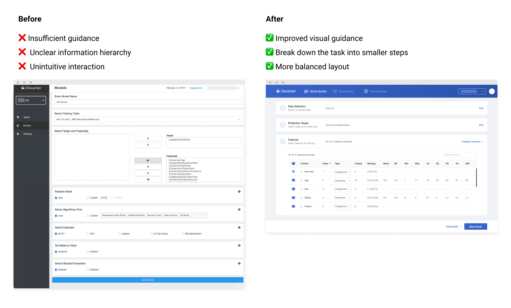

MoBagel AI Redesign
I re-designed the AI predictive dashboard and led the user research that will influence some of the most influencial companies in Taiwan.
MoBagel Website
Time
Jan. - Jul. 2019
Role
UX Designer & Researcher
Team
Product Manager, Marketing Director
Type
Work project
My Deliverable
UI design, Demo video
Methods
User Interview, Hi-fi Mockup, Wireframe
Tools
Sketch, Abstract, Overflow, Whimsical
Problem
AI is difficult understand for the majority of people, and the process of building a model with the old version of Decanter was lengthy and hard to navigate.
{kind=link}
My Goal
As the UX designer, my major goal is to redesign the user interface for Decanter AI, the main product that empowers data analysts with rapidly built Auto Machine Learning (AutoML) models.
AutoML, AI and Data Science are hard-core subjects, and my duty is to transform the technology into a user-friendly product that can be easily used. It took me lots of efforts the beginning to first roughly understand what AutoML is. The speciality of designing an enterprise-faced product is that it focuses so much on the logic and the technology itself, instead of fancy and market-driven visual imagery.
Data Science Lifecycle

Disclaimer
This work is protected by NDA. Therefore, I won’t be able to describe details about my projects. but I'd be happy to prsent the case study via 1-1 interview! Contact me at hsinyuy@umich.edu for details :)
Design Process
I joined the product development process right before the phase of HI-fi UI and continued through the process to the alpha release. Before I joined, the Product Managers had had a blueprint for the totally renovating product release and I was referred to the company to help realize the UX renovation of the new release.
What had been done before I joined
What was my mission
Challenge
Start-up work is exciting, but also has some constraints. Here are the 2 biggest design learnings
1. Designing with constraints
One challenge faced was utilizing limited resources to design within the business constraint of a start-up.
During this phase, I drafted up the user flow of the 7 main sections after numerous rounds of feedback and consulting with Product Managers and teammates. The goal is to think through product flow.
Data Upload Flow Chart

2. Communicating cross-functionally
Learned to use different design artefacts to communicate the design in an interdisciplinary team.
The following is an interaction diagram I used to communicate with developers about the transition of different pages.
Page Flow Chart


Design
I then started with design and work cross-fuctionally with Product Managers and Engineers. I extracted some of the most iconic pages.


User Validation
Prioritized feature fix based on user feedback on the alpha product
After the alpha release, I led the usability feedback session with 3 internal users and 1 external user and prioritized fixes based on urgency.
Affinity Mapping After User Interview

Takeaway
Since this is the first time as a UX Designer, I learned tons in this project. Here I listed 3 main things I improved, which are mostly about the mindset.
Confidence
At the beginning of the career transition, I was not confident in every decision I made — Yes, the Imposter Syndrome (take a looks at how Times Magazine talked about it.) How I gained confidence? Acknowledge my inadequacy and realize that everyone is learning.
Never hesitate to ask WHY
In the beginning, I was so intimidated by all of my colleagues and felt out of place because I seem to be the only one with a background in humanities and arts and no nothing about machine learning, data processing, and AI. So, I was very hesitant to ask questions. How did I start to ask why, proactively? As I gained more confidence in my work, I started to realize: asking the why is my job because I want to find out what users want!
Don’t jump into the solution TOO quickly
I was very excited and didn’t think much about questioning the product rationale when I was given the wireframe of the product because I thought I was new to AI and UX. However, I later realized everyone can provide an angle to improve the product even for beginners.